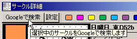
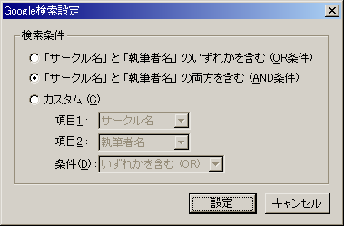

Web検索エンジンの「Google」を使用して、現在カーソルで選択中のサークルのWebサイトを検索することができます。
Googleでのサークル検索の実行は、メインメニューの「検索」→「サークルをGoogleで検索」、もしくはもしくはサークル詳細ウィンドウの「Googleで検索」ボタンから行います。

実行すると、Webブラウザを開いて、サークル名と執筆者名のOR条件（どちらかを含む）でGoogleに問い合わせを行います。
メインメニューの「検索」→「Google検索の条件設定」、もしくはサークル詳細ウィンドウの「設定」ボタンで、Google検索の検索条件を設定できます。

検索条件は、「『サークル名』と『執筆者名』のいずれかを含む」「『サークル名』と『執筆者名』の両方を含む」「カスタム設定」の中から選択できます。
「カスタム設定」を選んだ場合は、検索対象となる項目と、AND/OR条件を選択します。
初期設定では「『サークル名』と『執筆者名』の両方を含む」になっています。
これは、Googleの検索画面で「サークル名」と「執筆者名」をスペース区切りで入力した、最も一般的な検索となります。
※Google Inc.は Google Inc. の登録商標です